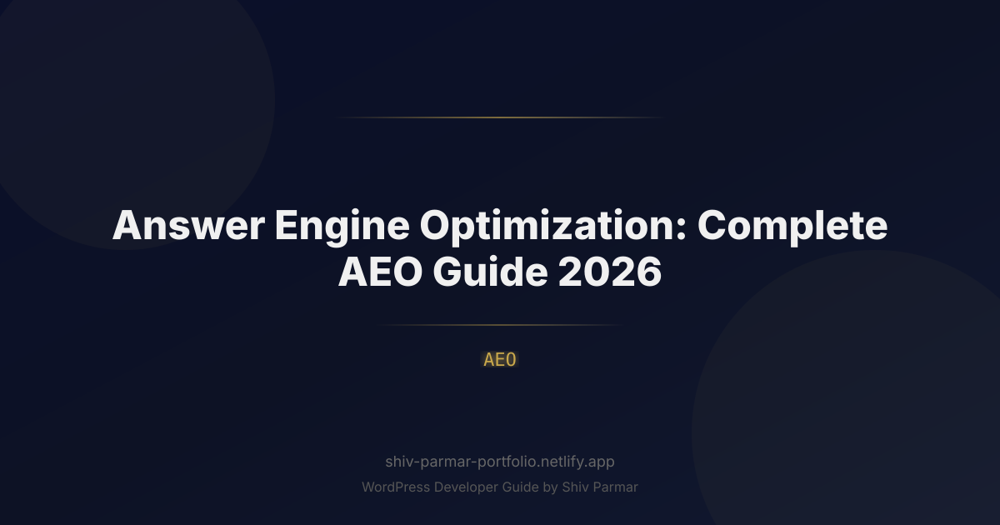

Answer Engine Optimization: Complete AEO Guide 2026 | Shiv Parmar
Table of Contents
The search landscape has undergone its most radical transformation since the inception of PageRank. In 2026, user behavior no longer centers on navigating fragmented lists of blue links, sifting through sponsored snippets, or scanning ten different browser tabs to compile an answer. Today, users query an answer engine—such as Google AI Overviews, Perplexity, OpenAI SearchGPT, Gemini, and Claude—and expect an immediate, synthesized, and verified response. If your digital presence is not engineered to feed these models directly, your organic visibility will plummet toward zero.
This paradigm shift has moved the industry from traditional Search Engine Optimization (SEO) to Answer Engine Optimization (AEO). Where classic SEO focuses on ranking URLs on a Search Engine Results Page (SERP), AEO focuses on getting your content extracted, synthesized, and cited as the authoritative source within AI-generated responses. In this environment, winning second place is often functionally equivalent to losing entirely: the answer engine delivers a single coherent response, occasionally backed by two to four explicit citations.
Mastering AEO requires a profound understanding of Large Language Models (LLMs), Retrieval-Augmented Generation (RAG), vector embeddings, and semantic knowledge graphs. This comprehensive 2026 guide breaks down the mechanics of AI search, provides a technical roadmap to dominate answer engines, and offers concrete frameworks you can implement today to capture the future of organic discovery.
What is Answer Engine Optimization (AEO)?
Answer Engine Optimization (AEO) is the strategic practice of optimizing digital content, technical infrastructure, and brand authority so that conversational AI systems and generative search engines select your data as the primary answer to user queries. While traditional SEO optimizes for indexing bots and ranking algorithms (like Googlebot evaluating PageRank, dwell time, and backlink equity), AEO optimizes for LLM reasoning engines, multi-hop semantic retrievers, and RAG architectures.
To grasp AEO, you must understand how an answer engine operates under the hood. When a user enters a complex, conversational query into an AI search engine, the system does not simply match keywords against an inverted index. Instead, it follows a multi-stage retrieval pipeline:
- Query Expansion and Deconstruction: The engine breaks the conversational prompt into sub-queries, identifying underlying entities, temporal constraints, and intent.
- Hybrid Retrieval (Dense + Sparse): The system executes vector semantic search alongside traditional keyword search to retrieve the most contextually relevant document chunks across the live web and its internal index.
- Re-ranking: Retrieved chunks are scored using cross-encoders based on factual authority, relevance, freshness, and source trust.
- Contextual Synthesis (RAG): The top-ranked chunks are passed into the context window of an LLM, which synthesizes a unified, natural-language response while dynamically injecting citations back to the source documents.
AEO is the discipline of structuring your information so that your content survives this multi-stage pipeline, scores highest during re-ranking, and is selected by the generation model as the factual baseline for its response.
| Dimension | Traditional SEO | Answer Engine Optimization (AEO) |
|---|---|---|
| Primary Goal | Rank on Page 1 of SERPs (Drive Clicks) | Become the Synthesized Answer & Primary Citation |
| Core Retrieval Unit | Entire Web Page (URL level) | Semantic Content Chunks (Paragraph/Vector level) |
| Query Style | Fragmented keywords ("best crm software") | Complex natural language & multi-turn prompts |
| Authority Metric | Domain Authority, Backlink profiles, Anchor text | Entity clarity, Consensus, Citational graph verification |
| Formatting Focus | Keyword placement, Meta tags, Skimmable UX | Information density, Q&A blocks, Structured data, BLUF |
Why AEO Matters in 2026
The urgency surrounding AEO is not speculative; it is driven by hard market shifts. By 2026, zero-click searches have surpassed historic highs, exceeding 65% across desktop and mobile devices according to aggregated clickstream data. When users receive accurate, comprehensive answers right at the top of their search screen, they rarely click through to an external website unless they require deep interactive functionality, primary transactional capabilities, or extended validation.
Several underlying market dynamics make AEO the most critical marketing discipline of 2026:
- The Collapse of Low-Value Informational Traffic: The days of generating millions of visits from surface-level 800-word articles defining terms (e.g., "What is ROI?") are over. AI engines answer these natively without sending traffic. Content strategies must pivot toward complex synthesis, novel insights, and high-density technical solutions.
- The Emergence of "Share of Model" (SoM): Brand tracking has expanded beyond "Share of Search" to "Share of Model." Marketing teams now measure how frequently their products, services, and executive leadership are recommended across base models (GPT-5, Gemini Ultra, Claude 3.5 Sonnet) during unbranded discovery queries.
- Agentic Search and Conversational Commerce: Search is no longer passive. In 2026, AI agents don't just find answers; they execute tasks. When an executive asks an AI agent to "Evaluate, select, and procure an enterprise identity provider compatible with our current tech stack," the agent will scan, evaluate, and choose based on the machine-readable facts and consensus it extracts via AEO frameworks.
- High-Intent Conversion from Citations: While overall search click-through rates (CTR) have declined, the conversion intent of users who do click citations inside an AI answer engine is dramatically higher. A user clicking a citation inside a synthesized comparison is not browsing—they are verifying the final details before executing a purchase decision.
Step-by-Step Guide to Mastering AEO
Transitioning your digital infrastructure from legacy SEO to modern AEO requires systematic engineering. Follow this six-step implementation guide to ensure your content is indexed, preferred, and cited by every major AI search engine.
1. Architecting Content for RAG and Vector Chunking
LLMs operating inside answer engines do not ingest your 4,000-word article as a monolithic piece of text. Instead, their ingestion pipelines split your content into discrete "chunks" (typically 200 to 500 tokens), convert them into high-dimensional vector embeddings, and store them in vector databases. When a query matches the vector similarity of a specific chunk, that chunk is retrieved into the prompt context.
To optimize for this architecture, you must adopt the BLUF (Bottom Line Up Front) approach, paired with semantically complete heading structures:
- Self-Contained Subsections: Ensure every H2 and H3 section functions as an autonomous unit of knowledge. Avoid using ambiguous pronouns (e.g., writing "It offers..." at the start of a section; write "Answer Engine Optimization offers..." instead). If a chunk is separated from the rest of the page, it must retain its complete context.
- Information Density Over Word Count: Remove conversational preamble. Replace sentences like "In today's fast-paced digital world, it is crucial to remember that..." with direct factual declarations: "AEO relies on high-density data formatting."
- Clear Delimiters: Use distinct semantic HTML elements (`<article>`, `<section>`, `<table>`, `<dl>`) to allow scrapers to effortlessly segment content without losing hierarchical context.
2. The "Answer Box" Anatomy: 40-to-60-Word Direct Declarations
Answer engines favor content that requires minimal computational rewriting during the generation phase. By explicitly providing a concise, 40-to-60-word definition directly beneath an interrogative heading, you hand the LLM an ideal candidate for direct extraction.
Follow this structural formula directly beneath any target question:
- The Direct Claim: State the core answer in one punchy, unambiguous sentence.
- The Clarifying Constraint: Add a secondary sentence qualifying scope, metrics, or timeframe.
- The Structured Breakdown: Follow immediately with an unordered list or tabular format displaying component data points.
Heading: How does vector search differ from keyword search?
Direct Extraction Block: "Vector search retrieves information based on conceptual and semantic meaning using high-dimensional mathematical embeddings, whereas keyword search matches lexical strings directly against an inverted index. Vector search excels at understanding contextual intent, while keyword search remains superior for exact-match identifiers, SKUs, and unique terminology."
3. Implementing Advanced Schema and Knowledge Graph Alignment
Answer engines rely heavily on Structured Data (Schema.org) to validate entities, establish relationships, and cross-reference information without having to deduce facts through expensive natural language inference. In 2026, standard schema is insufficient; you must employ explicit entity reconciliation using sameAs arrays, linking your organization, authors, and topics directly to Wikidata, Wikipedia, and official knowledge graphs.
Below is an enterprise-grade JSON-LD template demonstrating how to properly mark up an authoritative technical guide using advanced entity referencing:
<script type="application/ld+json">
{
"@context": "https://schema.org",
"@graph": [
{
"@type": "TechArticle",
"@id": "https://example.com/aeo-guide-2026/#article",
"isPartOf": {
"@type": "WebPage",
"@id": "https://example.com/aeo-guide-2026/"
},
"headline": "Answer Engine Optimization: Complete AEO Guide 2026",
"description": "An exhaustive guide detailing the operational mechanics of AI search, vector retrieval, and conversational optimization.",
"inLanguage": "en-US",
"mainEntityOfPage": "https://example.com/aeo-guide-2026/",
"datePublished": "2026-01-15T08:00:00+00:00",
"dateModified": "2026-03-30T10:30:00+00:00",
"author": {
"@type": "Person",
"name": "Alex Mercer",
"jobTitle": "Chief AI Architect",
"sameAs": [
"https://www.wikidata.org/wiki/Q115862821",
"https://www.linkedin.com/in/alexmercer-ai"
]
},
"publisher": {
"@type": "Organization",
"name": "Neural Semantic Labs",
"url": "https://example.com",
"logo": {
"@type": "ImageObject",
"url": "https://example.com/logo.png"
}
},
"about": [
{
"@type": "Thing",
"name": "Artificial Intelligence",
"sameAs": "https://en.wikipedia.org/wiki/Artificial_intelligence"
},
{
"@type": "Thing",
"name": "Search Engine Optimization",
"sameAs": "https://en.wikipedia.org/wiki/Search_engine_optimization"
}
],
"mentions": [
{
"@type": "SoftwareApplication",
"name": "Perplexity AI",
"operatingSystem": "All"
},
{
"@type": "SoftwareApplication",
"name": "ChatGPT",
"operatingSystem": "All"
}
]
}
]
}
</script>4. Establishing Multi-Source Consensus Networks
One of the strongest signals an answer engine uses to determine whether a factual statement should be included in an AI response is source consensus. Large language models and RAG systems are prone to hallucinations; to mitigate this, they cross-reference statements across their corpus. If your site makes an extraordinary or isolated claim that is contradicted by the rest of the web, the engine will discard your page to preserve output accuracy.
To win the consensus game:
- Seed Authoritative Data Across Third-Party Nodes: Distribute your primary research, proprietary statistics, and core claims across platforms that AI crawlers index intensely: Reddit, GitHub, industry publications, arXiv, and Substack. When an engine encounters your exact data point confirmed across three unrelated domains, its confidence score spikes.
- Cite Established Primary Sources: Corroborate your unique arguments by linking outward to authoritative peer-reviewed journals, governmental databases, or academic studies. This contextualizes your node within the broader semantic web.
- Claim and Standardize Your Entity Across Registries: Ensure your brand name, leadership team, physical address, and product names are 100% syntactically identical across Wikidata, Crunchbase, Google Business Profile, and LinkedIn. Inconsistencies confuse semantic entity resolution.
5. Structuring Tabular and Comparative Data for Machine Parsing
LLM tokenizers and attention mechanisms process structured tables with exceptionally high fidelity compared to dense, prose-heavy paragraphs. When answer engines answer comparative queries (e.g., "Compare X vs Y based on latency, pricing, and compliance"), they actively pull from explicit HTML tables.
To maximize extraction from tables:
- Always declare distinct
<thead>,<tbody>, and<th>elements with clear scope attributes. - Avoid empty cells; use explicit indicators such as "N/A", "Supported", or "Not Supported".
- Keep values within cells quantitative and concise rather than editorializing within the grid.
<!-- Example of machine-friendly, high-extraction tabular data -->
<table>
<caption>Enterprise Search Capabilities Comparison 2026</caption>
<thead>
<tr>
<th scope="col">Platform</th>
<th scope="col">Vector Ingestion Speed</th>
<th scope="col">SOC2 Type II</th>
<th scope="col">Hybrid Search Support</th>
</tr>
</thead>
<tbody>
<tr>
<th scope="row">Engine Alpha</th>
<td>12,000 docs/sec</td>
<td>Yes</td>
<td>Native</td>
</tr>
<tr>
<th scope="row">Engine Beta</th>
<td>4,500 docs/sec</td>
<td>Yes</td>
<td>Via Plugin</td>
</tr>
</tbody>
</table>6. Conversational Query Mapping and Intent Chaining
Traditional SEO focused on isolated search terms. In contrast, AI search interaction is multi-turn: a user asks a preliminary question, reviews the answer, and immediately follows up with contextual, narrowing prompts. To dominate an entire discovery journey, your content must map and satisfy the entire "Intent Chain."
Analyze how users interact with your domain conceptually:
- Root Question: "What is the most secure method for multi-tenant data isolation?"
- Follow-Up Prompt 1: "How does that impact query latency at petabyte scale?"
- Follow-Up Prompt 2: "What are the infrastructure cost differences between those two approaches?"
By proactively answering these predictive secondary and tertiary questions on the same page—clearly signposted with descriptive H3 headings—you provide the answer engine with the contextual depth required to keep referencing your document through multiple turns of a conversation.
AEO Best Practices for Maximum Visibility
Optimizing for AI systems demands a shift from marketing-heavy copywriting to rigorous informational architecture. Integrating the following best practices will elevate your citation frequency across all major engines:
- Maximize the "Fact-to-Fluff" Ratio: Evaluate your articles strictly on informational density. Calculate the number of verifiable facts, metrics, and technical directives per 100 words. Strip away conversational idioms, personal anecdotes that add no educational value, and hyperbolic adjectives. AI summarizers prioritize dense, objective material.
- Provide Original, First-Party Research: Answer engines continuously hunt for original statistics to ground their arguments. When you publish benchmark reports, user surveys, or novel laboratory testing data, state your methodology clearly. Format your primary discoveries as easily extractable pull-quotes and summary data blocks.
- Implement the "Speakable" Specification: With the proliferation of multimodal, audio-first answer engines (voice-driven hardware and conversational mobile assistants), utilize Schema.org's
speakableproperty to point crawlers to the exact sections of your page designed for direct audio readouts. - Maintain Temporal Relevance with Static Update Protocols: AI engines avoid citing information that appears stale, especially in fast-evolving fields. Update your content cyclically. Do not merely change the "Last Modified" timestamp; refresh data sets, update outdated tool versions, and document your historical changelog explicitly on the page.
- Ensure Impeccable Crawler Accessibility: Monitor your
robots.txtfile and server response headers to confirm you are not inadvertently blocking AI crawlers. Ensure user-agents such asGPTBot,PerplexityBot,ClaudeBot, andGoogle-Extendedhave unrestricted access to your authoritative content resources. Fast edge delivery and server-side rendering (SSR) are mandatory; dynamic content generated purely via client-side JavaScript execution often fails to be indexed by fast-pass AI scrapers.
Common AEO Mistakes to Avoid
Many organizations apply legacy SEO playbooks to AI search platforms, resulting in complete exclusion from conversational answers. Avoid these critical missteps:
- Burying Answers Under Extended Introductions: Writing 500 words of background context before answering the primary question ensures that an answer engine's scraper will truncate your content before reaching the useful data. Put the conclusion at the absolute top of the section.
- Relying Exclusively on Gated PDFs: If your highest-value technical frameworks and proprietary research are locked behind an email-capture form inside a PDF, answer engines will rarely parse or cite them effectively. Keep your primary insights accessible in clean, machine-readable HTML, and gate only the tactical templates or downloadable tools.
- Publishing Homogenized "AI-Generated" Content: Using an LLM to generate generic, middle-of-the-road articles without human insight creates content that mathematically resembles the average of the AI's existing training data. Answer engines prioritize documents that provide information gain—novel perspectives, proprietary data, or unique counter-arguments that do not already exist inside their baseline weights.
- Failing to Disclose Entity Authority (E-E-A-T): Anonymous or pseudonymous authorship is lethal in modern AEO. AI engines evaluate the credibility of the author entity by cross-referencing external academic papers, patents, social media authority, and industry contributions. Every technical piece must feature a clear, verifiable author bio linked to third-party identity verification nodes.
- Ignoring Cross-Platform Brand Perception: Answer engines synthesize brand reputations from third-party discussions, particularly forums like Reddit, Hacker News, and specialized communities. If your website claims your software has 99.99% uptime, but community consensus uniformly complains about frequent server outages, the answer engine will either highlight the discrepancy or omit your product from recommendations entirely.
Conclusion
As we navigate through 2026, the transition from traditional SERP dominance to conversational visibility makes Answer Engine Optimization (AEO) an essential pillar of your digital strategy. Winning visibility across modern AI search platforms is no longer just about tracking keywords; it requires structuring clear, authoritative, and direct solutions that machines can easily parse, trust, and synthesize.
Adapting your website to satisfy every major answer engine demands both high-value content and an uncompromising technical foundation. Seamless schema markup, lightning-fast loading speeds, and clean semantic architecture are vital to ensuring your content is cited as the primary answer rather than lost in the background noise of AI-generated summaries.
Executing an effective AEO strategy requires a platform built for the future. If you are ready to modernize your digital infrastructure and ensure your site is primed for the next era of discovery, Shiv Parmar is available for WordPress development work worldwide. Reach out today to build a high-performance, AEO-ready web presence that outpaces the competition in the age of AI search.